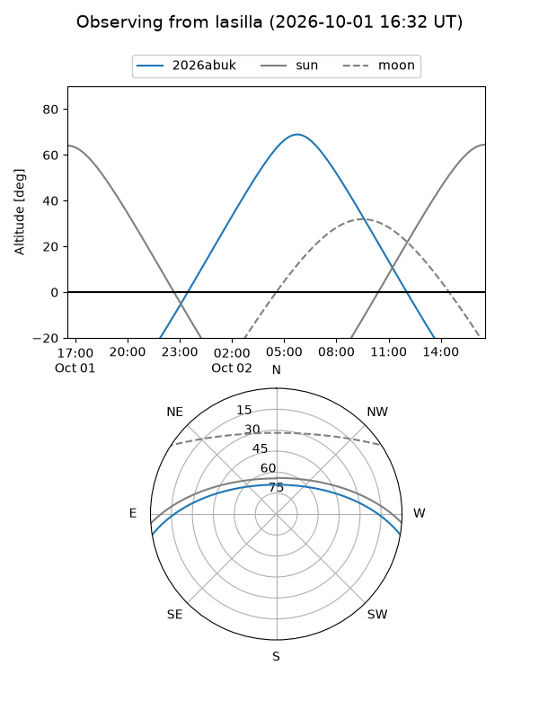
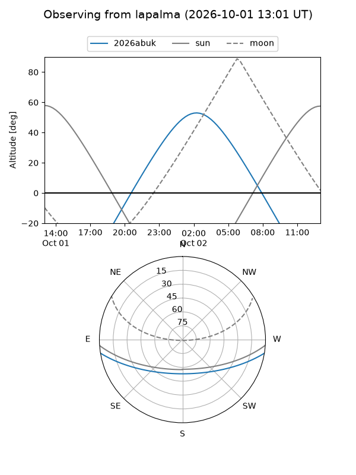
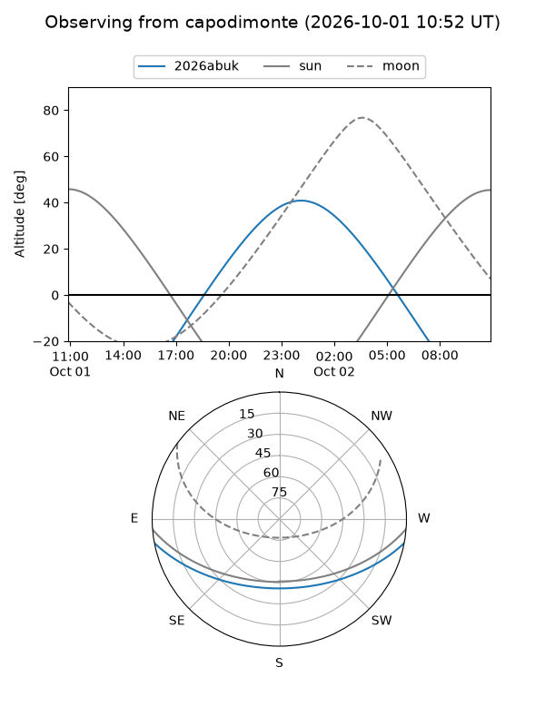
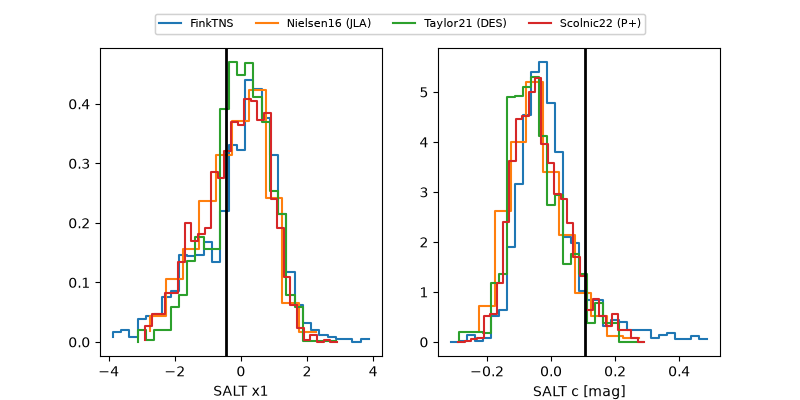

2026abuk
Target 2026abuk at 2026-10-01 18:43
Aliases and brokers:
FINK-ZTF: ztf.fink-portal.org/ZTF26abufohy
Lasair-ZTF: lasair-ztf.lsst.ac.uk/objects/ZTF26abufohy
ALeRCE-ZTF: alerce.online/object/ZTF26abufohy
YSE-PZ: ziggy.ucolick.org/yse/transient_detail/2026abuk
TNS name: wis-tns.org/object/2026abuk
Direct TNS query: direct search
alt names
ZTF26abufohy (ztf,fink_ztf)
2026abuk (tns,yse)
Coordinates:
equatorial (ra, dec) = 26.1603,-8.37501
equatorial (HMS+DMS) = 01:44:38.48,-08:22:30.03
galactic (l, b) = (159.2728,-67.41235)
Flags:
TNS type: nan
peak dt: +14.2
Photometry:
last ztfg=20.05, ztfr=19.86
4 ztfg, 4 ztfr detections
Lightcurve
Visibility



Additional plots
